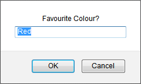

A First Javascript
Fire up whatever text editor you're comfortable with. For us, we're going to be using Notepad on a Windows machine. Add the simple HTML you see below:
So we have the HEAD and BODY tags of a HTML page, along with a TITLE area at the top. Save your text file with the name first_script.html. If you're using Notepad then you need to change the Save As Type area at the bottom to All Files, otherwise you'll end up with a text file rather than a HTML page that you can load into a browser. (You don't need to do this if you're using TextEdit on a Mac. Just type first_script.html in the Save As box.)
We now need to add some Javascript tags. In between the two BODY tags, then, add the following:
The lines you're adding are these:
<SCRIPT LANGUAGE = "Javascript">
alert("Hello World")
</SCRIPT>
Programming scripts are added between two <SCRIPT> tags, an opening one and a closing one. An attribute to the SCRIPT tag is LANGUAGE. This tells the browser which scripting language is being used. For us, this is Javascript. This goes after an equal sign ( = ). Notice that we've surrounded the word Javascript with double quote marks. But you don't have to. In fact, you can miss out the LANGUAGE attribute altogether and just have this:
<SCRIPT>
alert("Hello World")
</SCRIPT>
Any Javascript you want to add needs to go between the two SCRIPT tags. Careful of the forward slash for the end SCRIPT tag - miss this out and your code won't work. Like all HTML tags, though, the two SCRIPT tags can be lowercase, if you prefer:
<script>
alert("Hello World")
</script>
However, although the SCRIPT tags are not case sensitive Javascript very definitely
is. Our code consists of a single line, a simple alert box. All it does is to
display a dialogue box with the words "Hello World". Try it out. Save
your work. Now use Windows Explorer or Finder on a Mac to navigate to where
you saved the HTML file. Double click to run your script in a browser. You should
see the following in Firefox:
Or this in Internet Explorer:
Now change your alert line to this:
Alert("Hello World")
The word alert now has a capital "A". Save your work and reload the page in your browser. You should find that the alert box no longer displays. Change it back to a lowercase "a", save and reload. The alert box will come back.
Alert Boxes are used to display information to your users. In between a pair of round brackets, you type the text you want people to see. This text goes between quote marks (single or double quotes, but not a mixture of the two).
Confirm and Prompt
As well as an alert box, you can have a confirm and a prompt box. Using a confirm box will get you two buttons, OK and Cancel. They are normally used with an IF Statements to detect which of the two buttons was clicked. You'll learn about IF Statements in a later section, but the code for a Confirm box is just this:
confirm("OK or Cancel?")
Again, the text you want to display goes between quote marks. In a browser, the confirm box looks like this:
A prompt box is used when you want some input from the user. The code for a Prompt box is this:
prompt("Favourite Colour?", "Red")
The prompt box has two parts between the round brackets. The first part is
the heading, while the second part is some default text. Here's what they look
like in a browser:

A user can enter some text in the text box. When the OK button is clicked you can get at the text the user entered and do something with it. You'll see how to do this in the IF Statements section.
For both confirm and prompt boxes lowercase letters are used.
In the next lesson, we'll take a look at where the javascript tags go